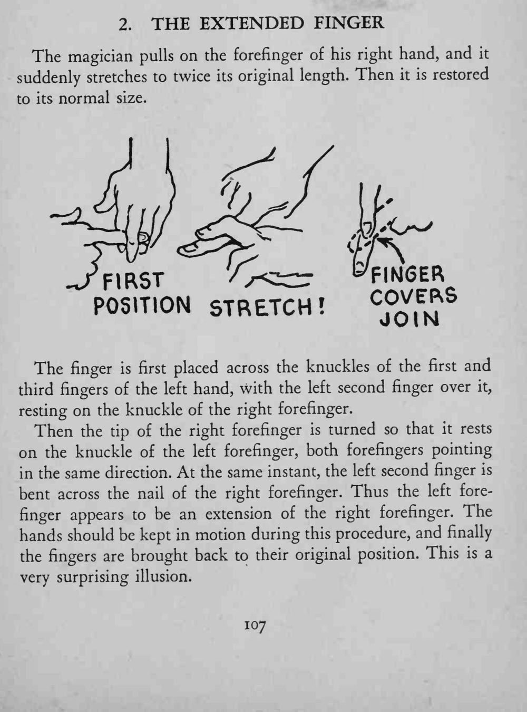
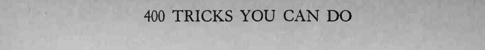

魔术师捏住右手食指一拉，食指突然变长到原来的两倍，随后又恢复原状。
关键是两根食指对齐、左手第二指遮住接缝；双手不停移动，接缝才看不出来。


The magician pulls on the forefinger of his right hand, and it suddenly stretches to twice its original length. Then it is restored to its normal size. r^~ *Wr../first jq,^ The finger is first placed across the knuckles of the first and third fingers of the left hand, with the left second finger over it, resting on the knuckle of the right forefinger. Then the tip of the right forefinger is turned so that it rests on the knuckle of the left forefinger, both forefingers pointing in the same direction. At the same instant, the left second finger is bent across the nail of the right forefinger. Thus the left forefinger appears to be an extension of the right forefinger. The hands should be kept in motion during this procedure, and finally the fingers are brought back to their original position. This is a very surprising illusion.